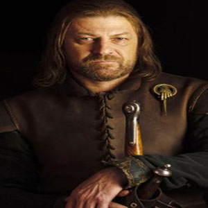
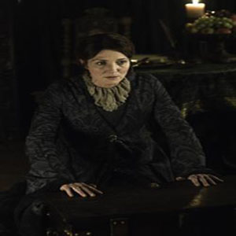
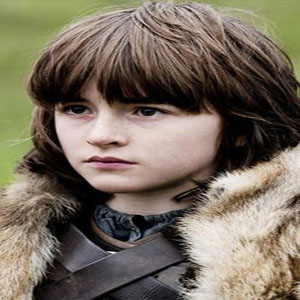
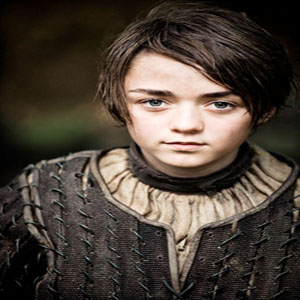

The following characters are main characters from the Stark Family in the HBO series Game of Thrones. This popular television show is wrapping up it's second of hopefully many seasons. The show draws an extreme amount of viewers and feeds off of viewers desires to relive the dark ages in times of royalty, castles, and dragons.




The Stark Family:
- Eddard Stark was made Lord of Winterfell by his friend King Robert Baratheon.
- Catelyn Stark has a sister who's prepubescent son leads another kingdom.
- Bran Stark was pushed out of a tower window paralyzing him from the waist down.
- Arya Stark is more of a "tom boy" and enjoys sword fighting rather than dolls.
The Throne:
- The Iron Throne was made from the swords of the defeated kings, melted by Aegon's dragon.
- Eddard Stark was the king's first choice to take over until Joffrey became of age.
- Joffrey is actually not in the bloodline of the kingdom.
- Joffrey betrays Eddard and beheads him near the end of the first season.
Fun Facts:
- Sean Bean (Eddard Stark) was nicknamed "Beanny" on the set.
- In the books, the famous conversation between Arya and Syrio Forel about "death of gods" does not exist.
- Peter Dinklage thanked his dog sitter in his emmy acceptance speach.
- Lena Headey was called a f***ing b***h by a fan at comi-con and many fans skipped her autograph, she was thrilled fans got so involved in the series.